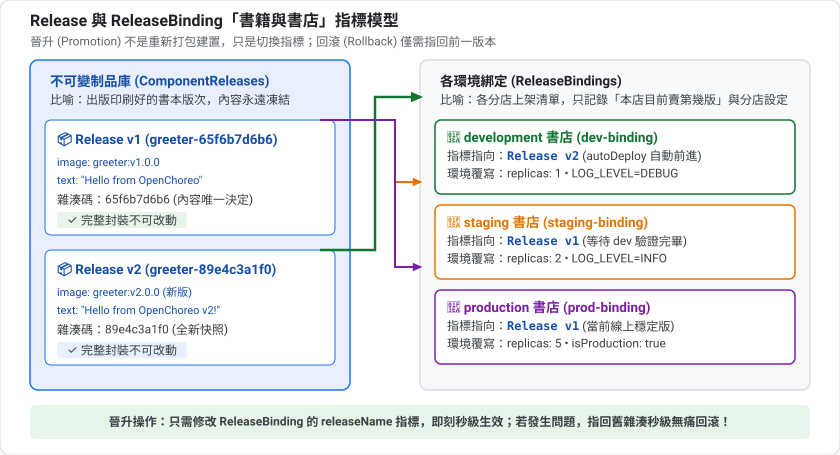
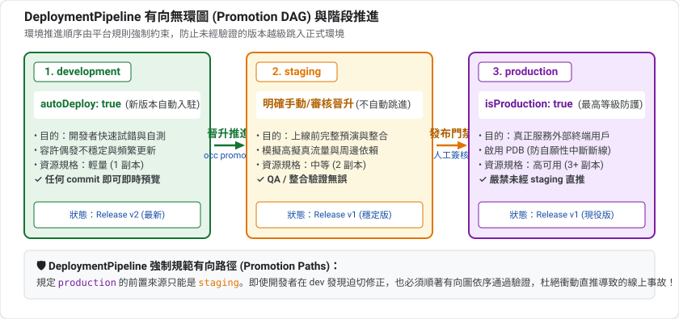
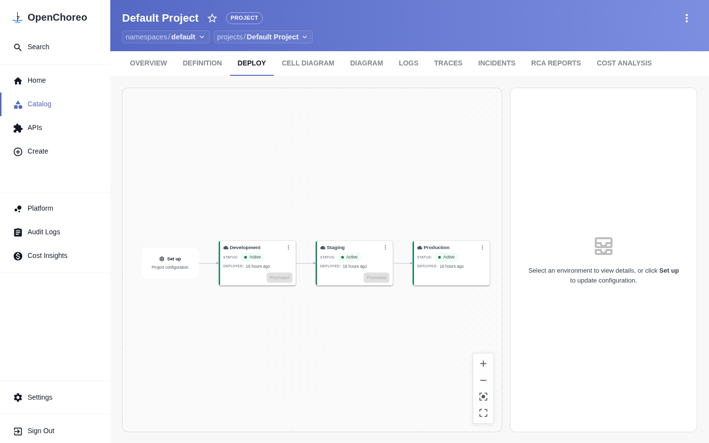
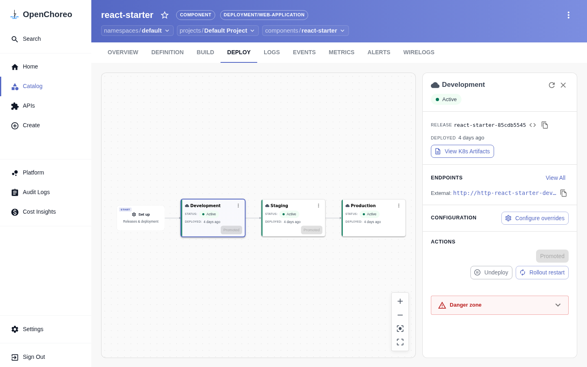

「建置一次,到處部署」是交付的基本原則。OpenChoreo 用不可變的 Release 加上每個環境一個 ReleaseBinding 實現它:同一份產物在各環境以相同方式執行,只有環境專屬設定不同。
development、staging、production 三個環境(Quick Start 預設就有)releaseName環境 | 目的 | 典型特徵 |
development | 開發者快速試錯 | 資源少、容許不穩定 |
staging | 上線前的完整演練 | 盡量和 production 相似 |
production | 真正服務使用者 | 高可用、嚴格管控 |
變更先在較低風險的環境驗證,再往前推,這個過程叫晉升(promotion)。
業界著名的 Twelve-Factor App 方法論有一條原則:把設定放在環境裡,不要寫死在程式碼中。理由是同一份程式碼會在不同環境執行,只有「資料庫位址、日誌等級、副本數」這類設定不同。
OpenChoreo 把這個原則做成制度:
內容 | 放哪裡 | 為什麼 |
跨環境一致的(映像、埠、元件類型) | Component / Workload | 每個環境都一樣,才有可比性 |
每個環境不同的(副本數、環境變數) | ReleaseBinding | 只改這裡,不動程式碼 |
不可變的意思是:一旦產生,內容就永遠不變。想改,就產生一個新的。
好處:
OpenChoreo 的 ComponentRelease 就是這樣的不可變快照,它的名稱尾碼是內容雜湊,內容一變雜湊就變。
可以想像成書與書店:
OpenChoreo | 比喻 |
ComponentRelease | 一本書的某個「版次」(第一版、第二版),印出來就不改 |
Environment | 不同的書店(實體店、網路書店、直營店) |
ReleaseBinding | 「這家書店目前上架第幾版」的紀錄 |
晉升 | 把某家書店的上架版次,改成較新的一版 |
回滾 | 改回舊版次 |

這樣你就能理解:晉升不是重新建置、重新打包,只是改變指標。所以非常快、非常安全。
DeploymentPipeline 規定了「環境之間可以怎麼走」,本質上是一張有向圖:

它的價值是強制流程:例如規定 production 只能從 staging 來,不能從 development 直接跳過去。Project 透過 deploymentPipelineRef 選擇使用哪一條管線,所以同一個 Project 的所有元件遵守同一套流程。
autoDeploy:新 Release 自動套用到第一個環境這個設計讓「快速迭代」與「謹慎上線」並存。
Positive : 接下來你會親手驗證這些概念:建立三個環境的綁定、讓 development 前進而其他環境不動、再做晉升與回滾。
kubectl get environment -n default
kubectl get deploymentpipeline -n default default -o yaml
預設會有三個 Environment,其中 production 標記為 isProduction: true。DeploymentPipeline 的重點是 promotionPaths:
spec:
promotionPaths:
- sourceEnvironmentRef:
kind: Environment
name: development
targetEnvironmentRefs:
- kind: Environment
name: staging
- sourceEnvironmentRef:
kind: Environment
name: staging
targetEnvironmentRefs:
- kind: Environment
name: production
這就是一張「有向圖」:development → staging → production。
kubectl get project default -n default -o jsonpath='{.spec}'
你會看到 deploymentPipelineRef: {kind: DeploymentPipeline, name: default}。同一個 Project 內的所有 Component 共用同一條管線。
資源 | 誰維護 | 作用 |
Environment | 平台工程師 | 一個部署階段,綁定一個 DataPlane |
DeploymentPipeline | 平台工程師 | 定義環境間可以怎麼晉升 |
ReleaseBinding | 開發者/自動化 | 把某個 Release 釘在某個環境,並帶環境覆寫 |
在架構上,Environment 屬於 Control Plane 的邏輯抽象,它如何落實到具體承載流量的 K8s 叢集?關鍵在於其 spec.dataPlaneRef 欄位:
kubectl get environment development -n default -o yaml
你會看到它精確指向一個 ClusterDataPlane:
apiVersion: openchoreo.dev/v1alpha1
kind: Environment
metadata:
name: development
spec:
dataPlaneRef:
kind: ClusterDataPlane
name: default
isProduction: false
development 可以指向測試叢集,而 production 指向實體隔離的生產專用 EKS/GKE 叢集(ClusterDataPlane)。cluster-agent 在對應的 Data Plane 上自動開闢專屬命名空間:dp---- (例如本課實測的 dp-default-default-development-f8e58905),確保不同環境的 Pod 具備嚴格的網路與資源邊界。kubectl get clusterdataplane default -o yaml,你會發現 Data Plane 不僅配置了 Envoy Proxy 監聽埠(19080),還宣告了 observabilityPlaneRef,自動將該資料平面的日誌與指標接入中樞。ClusterDataPlane 核心規格與心跳機制現在，讓我們用 kubectl 親自檢視這個定義整個 Data Plane 的核心 CRD：
kubectl get clusterdataplane default -o yaml
你會看到類似以下的核心欄位：
apiVersion: openchoreo.dev/v1alpha1
kind: ClusterDataPlane
metadata:
name: default
spec:
planeID: default
clusterAgent:
clientCA:
value: "-----BEGIN CERTIFICATE-----\n..."
gateway:
ingress:
external:
http:
host: openchoreoapis.localhost
listenerName: http
port: 19080
name: gateway-default
namespace: openchoreo-data-plane
observabilityPlaneRef:
kind: ClusterObservabilityPlane
name: default
status:
agentConnection:
connected: true
connectedAgents: 1
lastHeartbeatTime: "2026-10-10T07:36:30Z"
message: 1 agent connected
conditions:
- status: "True"
type: Created
核心區塊 | 作用與底層機制 |
| mTLS 零信任連線依據。Data Plane 內運行的 Agent 憑藉此 CA 簽發的客戶端憑證，向 Control Plane 建立反向 gRPC 長連線。 |
| Envoy 閘道拓撲規範。宣告外部請求的主機後綴（ |
| 關聯可觀測性。指名此資料平面由哪個 |
| 連線健康度與即時心跳。顯示當前是否有 Agent 連線（ |
當開發者反映「服務已顯示 Healthy，但在 Data Plane 透過網址連不上或噴 503」時，SRE 與維運工程師可依照以下標準四部曲進行 Data Plane 故障排查：
kubectl get clusterdataplane default -o jsonpath='{.status.agentConnection}'
kubectl logs -n openchoreo-data-plane -l app.kubernetes.io/name=cluster-agent-dataplane --tail=50
connected 為 false，代表 Control Plane 無法向 Data Plane 下發指令，需檢查網路連線或 mTLS 憑證。kubectl get renderedrelease -n default
kubectl describe renderedrelease <component>-<environment> -n default
status.conditions 是否包含 ResourcesApplied=True。若為 False，代表 Kubernetes 原生工件在 Data Plane 套用失敗（例如映像拉取失敗或名稱衝突）。kubectl get httproute -A
kubectl describe httproute <route-name> -n dp-...
status.parents[0].conditions 中的 Accepted 與 ResolvedRefs 是否皆為 True。若為 False，代表路徑衝突或後端 Service 找不到。kubectl get networkpolicy -n dp-... -o yaml
沿用第 3 課的映像,建立 promo-demo.yaml:
apiVersion: openchoreo.dev/v1alpha1
kind: Component
metadata:
name: promo-demo
namespace: default
spec:
owner:
projectName: default
autoDeploy: true
componentType:
kind: ClusterComponentType
name: deployment/service
---
apiVersion: openchoreo.dev/v1alpha1
kind: Workload
metadata:
name: promo-demo-workload
namespace: default
spec:
owner:
componentName: promo-demo
projectName: default
endpoints:
http:
type: HTTP
port: 9090
visibility: [external]
container:
image: "ghcr.io/openchoreo/samples/greeter-service:latest"
command:
- ./go-greeter
args:
- --port
- "9090"
env:
- key: LOG_LEVEL
value: "info"
kubectl apply -f promo-demo.yaml
kubectl wait --for=condition=Ready component/promo-demo -n default --timeout=60s
kubectl get releasebinding -n default | grep promo
只有 promo-demo-development 被自動建立。因為 autoDeploy: true 只會部署到管線的第一個環境。
記下目前的 Release 名稱:
kubectl get component promo-demo -n default -o jsonpath='{.status.latestRelease.name}{"\n"}'
下面以 RELEASE1 代表它。
看看 development 自動產生的 ReleaseBinding:
kubectl get releasebinding promo-demo-development -n default -o yaml
重要欄位:
欄位 | 意義 |
| 綁定的環境 |
| 屬於哪個 Component |
| 釘選的 ComponentRelease |
|
|
| 覆寫 ComponentType 的環境參數(例如 |
| 覆寫容器環境變數 |
Positive : 第 2 課說過:跨環境一致的值放 Component 的 Parameters,環境專屬的值放 ReleaseBinding。這就是為什麼同一個 Release 可以在 staging 跑 2 個副本、在 production 跑 1 個,卻不用改 Component。
建立 promo-staging.yaml,把 RELEASE1 換成你的 Release 名稱:
apiVersion: openchoreo.dev/v1alpha1
kind: ReleaseBinding
metadata:
name: promo-demo-staging
namespace: default
spec:
environment: staging
owner:
componentName: promo-demo
projectName: default
releaseName: RELEASE1
state: Active
componentTypeEnvironmentConfigs:
replicas: 2
workloadOverrides:
container:
env:
- key: LOG_LEVEL
value: warn
再建立 promo-prod.yaml,環境改成 production,名稱改成 promo-demo-production,replicas: 1,LOG_LEVEL 設為 error。然後套用:
kubectl apply -f promo-staging.yaml -f promo-prod.yaml
kubectl wait --for=condition=Available deploy -A -l openchoreo.dev/component=promo-demo --timeout=200s
kubectl get deploy -A | grep promo
預期 staging 是 2/2,development 與 production 是 1/1。
環境變數被放進各環境的 ConfigMap:
for ns in development staging production; do
kubectl get cm -A -o jsonpath='{range .items[*]}{.metadata.namespace}{" "}{.metadata.name}{" "}{.data}{"\n"}{end}' \
| grep "promo-demo-$ns-env-configs"
done
預期分別看到 {"LOG_LEVEL":"debug"}(若尚未改動則是 info)、warn、error。
呼叫三個環境(主機名稱格式 {環境}-default.openchoreoapis.localhost):
for e in development staging production; do
curl -s http://$e-default.openchoreoapis.localhost:19080/promo-demo-http/greeter/greet; echo " <- $e"
done
在入口網站的 DEPLOY 分頁中，可視覺化檢視三個環境的 Promotion 流水線：

點擊特定環境卡片，可在右側側邊欄檢視目前釘選的 Release 雜湊、端點網址與 View K8s Artifacts 按鈕：

Negative : 本課是手寫 ReleaseBinding,為了讓你看清楚結構,所以 kubectl apply 不會檢查是否符合 DeploymentPipeline 的晉升路徑。實務上建議用 occ component deploy --to 或 GitOps 流程,讓管線規則發揮作用(見最後一節)。
修改程式的設定,產生新的 Release:
sed -i 's/value: "info"/value: "debug"/' promo-demo.yaml
kubectl apply -f promo-demo.yaml
sleep 10
kubectl get component promo-demo -n default -o jsonpath='{.status.latestRelease.name}{"\n"}'
kubectl get releasebinding -n default \
-o custom-columns=NAME:.metadata.name,ENV:.spec.environment,RELEASE:.spec.releaseName | grep -E 'NAME|promo'
預期結果:
ReleaseBinding | Release |
promo-demo-development | 新的 |
promo-demo-staging | 仍是 |
promo-demo-production | 仍是 |
Positive : 這就是「釘選」的價值:你可以在 development 反覆迭代,staging 與 production 不受影響,直到你明確決定晉升。
晉升 = 把下一個環境的
releaseName
指向新的 Release。 把 RELEASE2 換成上一節看到的新名稱:
kubectl patch releasebinding promo-demo-staging -n default \
--type merge -p '{"spec":{"releaseName":"RELEASE2"}}'
sleep 15
kubectl get releasebinding -n default \
-o custom-columns=NAME:.metadata.name,RELEASE:.spec.releaseName | grep -E 'NAME|promo'
staging 現在跟 development 同版本,但環境覆寫沒有消失:staging 仍然是 2 個副本、LOG_LEVEL=warn。
回滾只是把釘選改回去:
kubectl patch releasebinding promo-demo-staging -n default \
--type merge -p '{"spec":{"releaseName":"RELEASE1"}}'
kubectl get releasebinding promo-demo-staging -n default \
-o jsonpath='{.status.conditions[?(@.type=="Ready")].message}{"\n"}'
預期看到 ReleaseBinding is ready。因為 Release 不可變,回滾得到的和當初部署的完全一樣。
occ 也提供晉升指令(依 occ component deploy --help):
# 部署最新 Release 到管線的第一個環境
occ component deploy promo-demo --namespace default --project default
# 晉升到下一個環境
occ component deploy promo-demo --namespace default --project default --to staging
Negative : occ 需要先 occ login(會開瀏覽器)。本課的 occ 指令是依 --help 說明整理,沒有實際執行。還有 occ releasebinding generate 可以產生 ReleaseBinding 的 YAML,適合搭配 GitOps(第 6 課)。
kubectl delete releasebinding promo-demo-staging promo-demo-production -n default
kubectl delete -f promo-demo.yaml --ignore-not-found
試著不看上文回答下面的問題;答不出來的,回頭看對應的章節。
autoDeploy 會把新 Release 部署到哪些環境?releaseName 指向它,所以快速、可重現、可回滾。releaseName 改回舊的 Release 名稱。你已經:
概念 | 一句話 |
Release | 不可變的版本,建置一次 |
ReleaseBinding | 把 Release 釘在環境,並帶環境覆寫 |
晉升 | 修改下一個環境的 |
回滾 | 把 |
06:GitOps — 不再手動 kubectl patch,把 ReleaseBinding 放進 Git,由 Argo CD 同步。